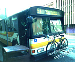

呂清夫 撰文

地球上的島嶼往往都能給人以優美的意象，因為它們都有碧海青天的襯托，所以台灣曾被西人稱為美麗之島，關島、塞班島、夏威夷群島至今也都是渡假的勝地。不過曾幾何時，台灣由於人口激增，環境惡化，與美麗二字似乎漸行漸遠。不知是不是因為沒什麼美麗可以佇足觀看，所以島民生活都是那麼匆忙。也不知是不是因為太過匆忙，所以島上僅有的美麗也將消失於大家的粗心。在國外待一陣子回來，每次都會覺得不敢過馬路，每次過馬路都要遲疑很久，因為比起來，台灣的汽機車實在衝得太兇了，行人常有四面受敵之感，特別是機車對於行人都沒有起碼的尊重，橫衝直撞，如入無人之境。台北的車道可以說是機車族培養個人主義、英雄主義的溫床。因為巷道毫無限速標誌、人車不分道、偶有人行道反而方便了機車族的抄近路，行人毫無保障。與行人相比，台灣是機車族的天堂，難怪台北烏煙瘴氣，難得看到青天。同屬島國的夏威夷之所以空氣好，沒有摩托車可能是一大原因，摩托車雖然方便，但是付出的社會代價則不為不高，不但製造污染，也帶來危險，全世界大概只有台北跟曼谷有最多的摩托車，其中無不顯示了公共交通的嚴重落伍。夏威夷沒有摩托車，沒有鐵路，也沒有地下鐵，觀光客又多，但是大家仍舊沒有交通的問題，主要是靠發達的公車系統，由於公車太過方便，故連開車族也搭乘公車上學上班，開車只是為了旅遊或買菜。夏威夷公車路線繁密，收費低廉，服務周到。他們的公車最近才漲價為一美元，但下車兩小時內換車可以免費，如果下車的地方，找不到你要轉成的公車，你也可以隨便搭個兩、三站，在靠近你要搭的公車站附近下車，再轉乘第三部公車上路。公車車程再長也不分段，有些路線還可以環島一週，車程四小時，同樣只需一美元。夏威夷公車乾淨舒適，冷氣特強，座位前半段都是博愛座，還可以讓輪椅開上去。司機一般都很有耐性，且以原住民居多，遇有老弱婦孺，通常都會忙上一番，碰到老人，司機會馬上按鈕降低入口台階，讓老人輕鬆上車；碰到婦人推著娃娃車，司機則會幫忙推車，讓婦人只抱小孩。遇有觀光客問長問短，也都會停下車仔細說明一番。這種公車其實有點像遊覽車，車快到站時不但會廣播告訴你這是哪一站，還會介紹附近的名勝古蹟或旅館。如果你在山區步行，公車居然會紆尊降貴，在你的身邊停下來，問你要不要搭乘。有不少人喜歡在夏威夷騎單車，每當你騎累了，也可以連同單車一起去搭公車，因為公車前面都設有單車停放架，當你上車時把單車放在架上，當你下車時，就可以拿下來繼續騎你的單車了。與台灣相比，夏威夷是行人與單車族的天堂，不但風景優美、天朗氣輕，可以邊走邊欣賞路上美景，同時真正做到行人優先，因為任何一個十字路口都有按鈕，而且反應敏捷，行人可以很快就等到綠燈。車輛則要不時停停開開，「英雄」不得。其實車輛由機械發動，不需體力，行人則不然，故行人優先跟女士優先同樣，是一種文明的表現。如在弱者前面逞強，實在也算不了什麼英雄了。發達的公車系統保住了夏威夷的美麗，大家不需要自備汽機車來污染空氣、或製造塞車。也不必因為車輛激增需要一天到晚開挖道路，讓青山綠水不時開腸破肚。即使在市區，車道建設也不會是都市景觀的殺手，他們不會為了車道，犧牲了街道的審美要素或歷史記憶，台北林安泰古厝雖然為了車道而淪亡，但是夏威夷的城中區卻保留了全島最多的古蹟，即使是一個小墳墓，也都好端端的保存在街頭！連街道名稱都徹底保留了原住民的風味。夏威夷啊，真是名不虛傳！圖說︰夏威夷的公車前面設有單車停放架，公車與單車成了命運共同體。